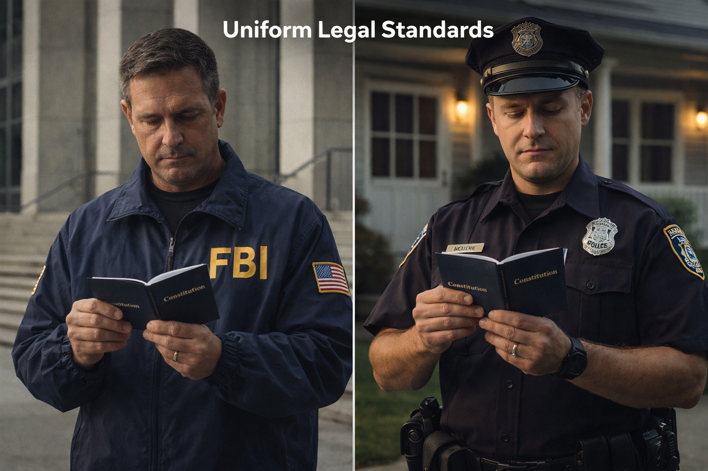
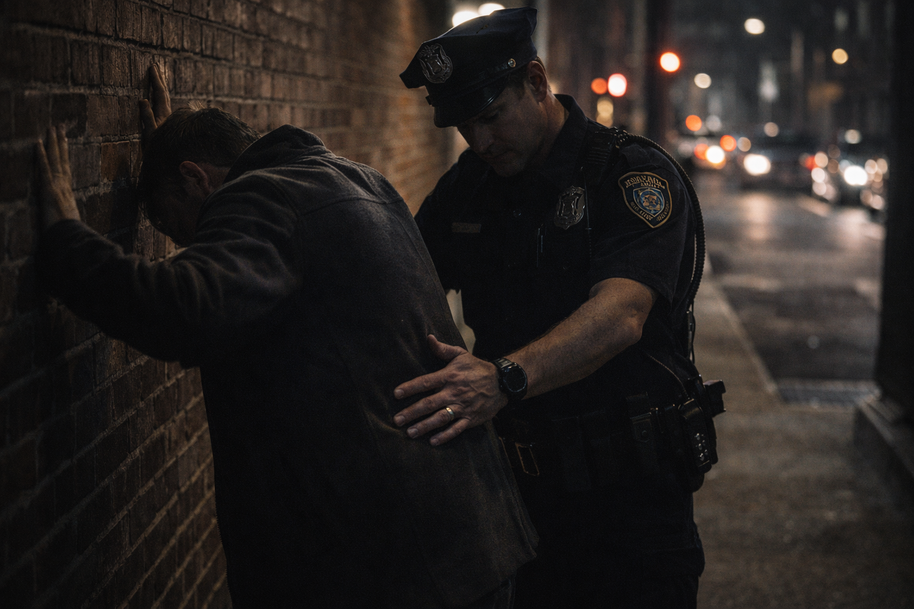
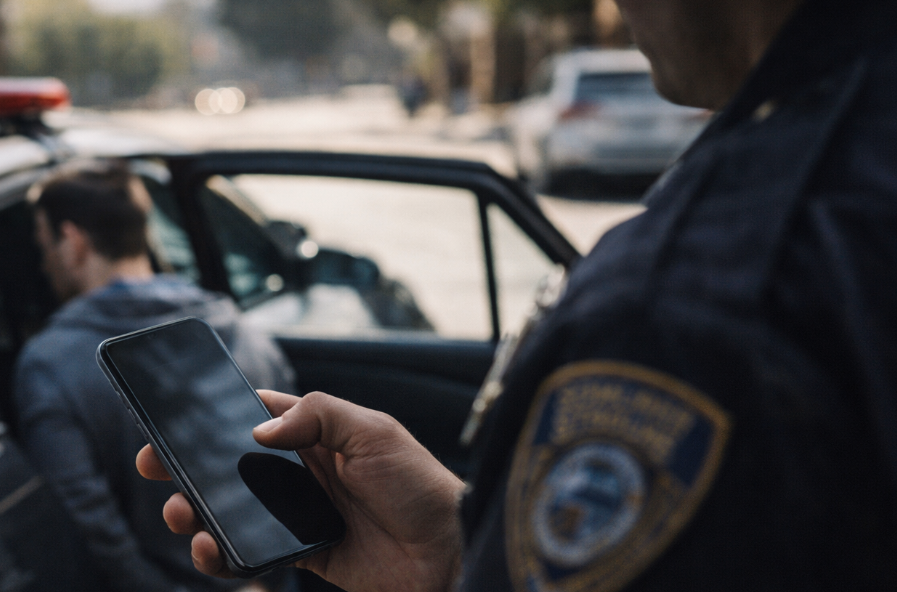
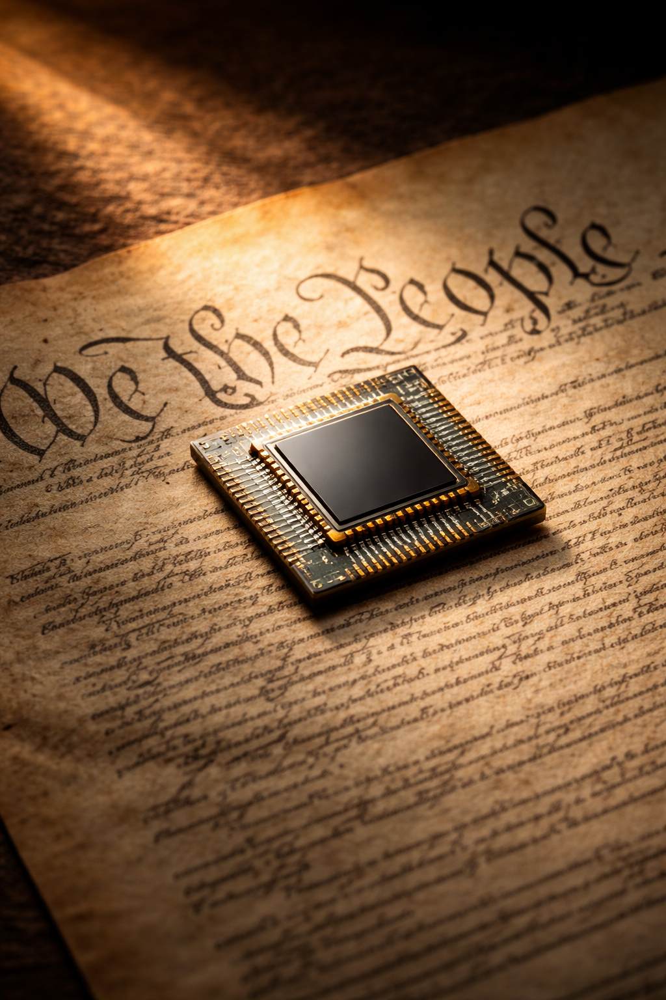
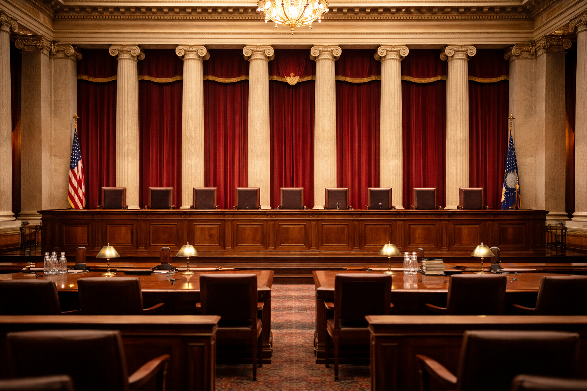

Core Objectives
- Analyze the doctrine of selective incorporation and explain how the Fourteenth Amendment's Due Process Clause has been used by the Supreme Court to apply the Bill of Rights to state governments.
- Identify the core requirements of a lawful search and seizure under the Fourth Amendment, including probable cause, judicial warrants, and specificity.
- Evaluate the constitutional tensions between public safety and individual privacy rights as illustrated by surveillance legislation and landmark Supreme Court cases.
- Explain how advances in digital technology have forced courts to reconsider traditional definitions of "search" and "reasonable expectation of privacy."
Key Terms
- Selective Incorporation
- Exclusionary Rule
- Search and Seizure
- Probable Cause
- Reasonable Expectation of Privacy
- Right to Privacy
- Warrant
- Surveillance
Introduction
Few documents in American history have generated as much controversy, litigation, and philosophical debate as the Fourth Amendment to the United States Constitution. Written in fewer than sixty words, it declares that "the right of the people to be secure in their persons, houses, papers, and effects, against unreasonable searches and seizures, shall not be violated." At its core, the Fourth Amendment is a statement about power — specifically, about the limits of government power over the private lives of citizens. It reflects the founders' hard-won conviction, shaped by their experiences under British colonial rule, that a government left unchecked would inevitably abuse its authority. The general warrants and writs of assistance that British officials had used to ransack colonial homes without any specific justification were still fresh wounds in the American political memory when James Madison drafted the Bill of Rights in 1789.
The broad usage of general warrants and writs of assistance by British officials during the colonial era deeply impacted the framers' understanding of government overreach, directly inspiring the strict limits on search and seizure drafted into the Fourth Amendment.
Analysis Question:
How did the historical experience of being subjected to unchecked searches by British authorities shape the specific requirements written into the Fourth Amendment?
Yet the Fourth Amendment did not spring into full effect across the entire American system of government the moment it was ratified. For much of American history, its protections applied only to the actions of the federal government. State governments — with their own police forces, prosecutors, and courts — operated outside its reach. It was not until the twentieth century, through the slow, deliberate process known as selective incorporation, that the Supreme Court began extending the Bill of Rights to the states, one provision at a time. This process fundamentally transformed the relationship between individual citizens and their state governments, ensuring that the constitutional protections meant to shield Americans from federal overreach would apply with equal force when a local police officer knocked on the door.
Today, the Fourth Amendment operates in an environment the Framers could never have imagined. The "papers and effects" that the amendment was written to protect now include text messages, cloud storage, GPS location data, and the entire digital architecture of a person's life. As the government develops ever more sophisticated tools for surveillance — facial recognition software, algorithmic monitoring systems, bulk data collection programs — courts are forced to ask whether the constitutional principles of 1791 can be adapted to the technological realities of the twenty-first century. This chapter explores that ongoing negotiation: between security and liberty, between the state's obligation to protect its citizens and the citizen's right to be left alone.
Understanding this balance requires examining three interlocking questions. First, how did the Fourth Amendment come to apply to the states? Second, what does it actually require of law enforcement, and where does it draw the line between permissible policing and unconstitutional intrusion? Third, how have modern challenges — from the Patriot Act to smartphone searches — forced a renegotiation of constitutional principles that were once thought settled? The answers reveal not just the technical law of the Fourth Amendment, but the deeper democratic logic that makes privacy a precondition for freedom.
Selective Incorporation and the Fourteenth Amendment
When the Bill of Rights was ratified in 1791, its protections were understood to constrain only the federal government. This interpretation was not merely assumed — it was legally established by the Supreme Court in the 1833 case Barron v. Baltimore. John Barron, a wharf owner, sued the city of Baltimore after municipal construction projects diverted streams and deposited silt that made his previously deep-water wharf nearly useless. He argued that the Fifth Amendment's requirement that the government pay "just compensation" when it takes private property applied to the city. Chief Justice John Marshall, writing for a unanimous Court, disagreed. The Bill of Rights, Marshall explained, had been drafted to address fears about the newly created federal government. It placed no limitations on the power of state governments. As far as the Constitution was concerned, states were free to manage their own affairs — including their relationships with their own citizens — as they saw fit.
This ruling left a significant gap in the constitutional protection of American liberty. For decades, state governments could restrict speech, conduct searches without warrants, and deny accused persons the right to counsel, all without triggering any constitutional objection from federal courts. The Bill of Rights, the nation's most celebrated guarantee of individual freedom, was simply irrelevant to how states exercised power over the people who lived within their borders.
The Fourteenth Amendment and the "Second Founding"
The Civil War changed everything. When the Southern states were defeated and the nation began the process of Reconstruction, Congress recognized that the prewar constitutional structure had tolerated — and in many ways enabled — the subjugation of millions of Americans. The Thirteenth Amendment abolished slavery. The Fourteenth, ratified in 1868, went further. Among its most consequential provisions was the Due Process Clause, which declared that no state could "deprive any person of life, liberty, or property, without due process of law." Alongside this was the Equal Protection Clause, ensuring that states must apply their laws equally to all persons within their jurisdiction.
Historians and legal scholars sometimes call this era the "Second Founding" — a moment when the constitutional order was fundamentally restructured to prioritize national citizenship and limit the autonomy of states to oppress their residents. The Fourteenth Amendment did not immediately produce this transformation in practice, particularly in the South, where Reconstruction-era protections for formerly enslaved people were eroded through violence and legal maneuvering within a generation. But the Amendment's language established a constitutional foundation that later generations would use to demand that the promises of the Bill of Rights be honored at every level of American government.
The mechanism through which this happened was a legal doctrine called incorporation. The theory, as it developed in the twentieth century, held that certain rights listed in the Bill of Rights were so fundamental to liberty and justice that they were necessarily included in the "liberty" protected by the Fourteenth Amendment's Due Process Clause. If a state denied a person one of these fundamental rights, it was violating the Constitution — and federal courts could intervene.
Before the Civil War, the Supreme Court ruled in Barron v. Baltimore that the Bill of Rights only constrained the federal government, leaving state and local governments free to operate without federal constitutional limitations on their interactions with citizens.
Analysis Question:
Why did the Supreme Court initially rule that the Bill of Rights did not protect citizens against the actions of their state and local governments?
Checkpoint
What was the significance of the Supreme Court's ruling in Barron v. Baltimore (1833)?
The Mechanics of Selective Incorporation
The Court did not incorporate the entire Bill of Rights at once. Instead, it adopted what became known as selective incorporation — a case-by-case approach in which the Court examined each right individually and asked whether it was fundamental to a "scheme of ordered liberty" or "deeply rooted in this nation's history and tradition." If the answer was yes, the right would be incorporated — meaning it would apply to state governments through the Fourteenth Amendment, just as it applied to the federal government directly through the original Bill of Rights.
The process began tentatively in the 1920s. In Gitlow v. New York (1925), the Supreme Court upheld the conviction of a socialist pamphleteer under a New York criminal anarchy law, but the majority assumed — without extended analysis — that freedom of speech and press were among the fundamental liberties protected against state infringement by the Fourteenth Amendment. This was a significant step: for the first time, the Court was treating a Bill of Rights provision as applicable to a state action. The pace quickened in the 1930s and 1940s, as the Court incorporated rights related to freedom of religion, the right to counsel in capital cases, and protections against coerced confessions.

Rather than applying the entire Bill of Rights to the states at once, the Supreme Court utilized selective incorporation to gradually extend fundamental protections—such as those found in the First, Fourth, Fifth, and Sixth Amendments—to the state level on a case-by-case basis.
The most dramatic era of incorporation came during the 1960s, under Chief Justice Earl Warren. The Warren Court transformed American constitutional law by systematically extending the criminal procedure protections of the Fourth, Fifth, and Sixth Amendments to the states. The exclusionary rule — the principle that evidence obtained in violation of the Fourth Amendment cannot be used in a criminal trial — was applied to state courts in Mapp v. Ohio (1961). The right to counsel in all felony cases was extended to state defendants in Gideon v. Wainwright (1963). The protection against self-incrimination was applied to state police interrogations in Miranda v. Arizona (1966). Each of these decisions represented a judgment that the right in question was not merely a technical legal rule, but a fundamental protection without which a genuinely fair criminal justice system could not exist.
The practical effect of selective incorporation was to nationalize the standards of criminal justice. Before incorporation, a defendant in Mississippi had vastly fewer constitutional protections than a defendant in federal court. After incorporation, the same constitutional rules governed both. The states did not lose all authority over criminal procedure, but they could no longer operate in a constitutional vacuum. The federal judiciary became the ultimate arbiter of what due process required, regardless of whether the government in question was located in Washington, D.C., or in a county courthouse in rural Alabama.
Checkpoint
Which Supreme Court decision applied the exclusionary rule to state criminal courts?
The Enduring Logic of Incorporation
The doctrine of selective incorporation rests on a fundamental premise: that the constitutional rights of Americans should not depend on which government — federal or state — happens to be violating them. This premise reflects a particular understanding of citizenship. Before the Civil War, a person's primary legal identity was as a citizen of their state; national citizenship was secondary. The Fourteenth Amendment reversed this hierarchy. It created a direct bond between the individual citizen and the national government, one that no state could sever.

Through selective incorporation, the Fourteenth Amendment created a constitutional framework where local and state governments must adhere to the same fundamental due process rules as federal agencies, effectively nationalizing core civil rights.
This shift in the constitutional understanding of citizenship has had lasting consequences. It means that a local police department must follow the same constitutional rules as a federal law enforcement agency. It means that a state legislature cannot abridge freedoms that Congress could not touch. And it means that the Supreme Court, as the interpreter of the national Constitution, has authority to review and invalidate the actions of every government in the American system, from the smallest municipality to the most powerful state. Critics of this development have argued that it diminishes the diversity and experimentation that federalism is supposed to enable. Defenders respond that there are some rights — the right not to have your home searched without a warrant, the right not to be compelled to confess to a crime — that are too fundamental to leave to the discretion of any particular state. Selective incorporation reflects the Court's judgment that the basic dignity of the individual is a national commitment, not a local option.
Checkpoint
What principle underlies the doctrine of selective incorporation?
The Fourth Amendment: Privacy and Policing
With selective incorporation establishing that the Fourth Amendment applies to state and local law enforcement, the next question is what the Amendment actually requires. At its simplest, the Fourth Amendment prohibits "unreasonable" searches and seizures and generally requires that warrants be supported by probable cause and describe with particularity the place to be searched and the things to be seized. But the meaning of these words — particularly the word "unreasonable" — has been contested in hundreds of Supreme Court decisions spanning more than a century.
The Warrant Requirement and Its Logic
The warrant requirement is the Fourth Amendment's most important structural feature. Before law enforcement can search a person's home, rifle through their belongings, or intercept their communications, they must ordinarily obtain a warrant from a neutral and detached magistrate — a judge who has no stake in the investigation and whose job is to serve as an independent check on police enthusiasm.
To obtain a warrant, officers must demonstrate probable cause: a reasonable belief, based on specific articulable facts, that evidence of a crime will be found in the place to be searched or that the person to be arrested has committed a crime. This is a meaningful standard, though not an overwhelming one. Probable cause is more than a hunch, but it does not require the certainty of proof beyond a reasonable doubt. The key is that the officer must be able to point to concrete, specific facts — not vague suspicions or stereotypes — that would lead a reasonable person to believe a search was justified.

The warrant requirement serves as a critical structural check on law enforcement, mandating that an independent judge verify the existence of probable cause and ensuring the search is strictly limited to specific places and items.
Analysis Question:
How does the requirement for a warrant to describe "with particularity" the place to be searched protect individuals from government overreach?
The warrant must also be specific. The Fourth Amendment, drawing directly on the colonial experience with British general warrants, requires that the warrant describe "the place to be searched, and the persons or things to be seized." A warrant that simply authorizes police to search "wherever they think appropriate" or to seize "whatever they find" is constitutionally insufficient. The specificity requirement serves a crucial function: it forces law enforcement to identify in advance exactly what they are looking for and where, limiting the scope of any intrusion and protecting areas and items not connected to the alleged crime.
The home occupies the most protected position in Fourth Amendment jurisprudence. The Supreme Court has repeatedly described the home as the most private sphere in American life, the one place where citizens have the strongest claim to be free from government observation. An officer who enters a home without a warrant, without consent, and without an applicable exception is committing a constitutional violation, regardless of what they find inside.
Checkpoint
What is the primary purpose of the Fourth Amendment's specificity requirement for warrants?
Reasonable Expectation of Privacy
In Katz v. United States, the Supreme Court established that the Fourth Amendment protects people, not just physical spaces, shifting the legal focus to whether an individual has exhibited a reasonable expectation of privacy recognized by society.
Not every government intrusion constitutes a Fourth Amendment "search." The Court has developed a framework — originating in Katz v. United States (1967) — to determine when the Fourth Amendment is implicated at all. In Katz, FBI agents placed a listening device on the outside of a public telephone booth to record the defendant's phone calls. The government argued that because the booth was a public place and agents had not physically entered it, there was no search. The Supreme Court disagreed. Justice Potter Stewart's majority opinion established that "the Fourth Amendment protects people, not places." What mattered was not the physical location but whether the person had a reasonable expectation of privacy.
Justice John Marshall Harlan's concurring opinion in Katz elaborated the test into two parts, which courts have applied ever since. First, had the person exhibited a subjective expectation of privacy — did they actually believe their conversation was private? Second, was that expectation one that society was prepared to recognize as reasonable — was it, in other words, an objectively justified expectation? In Katz, the defendant had taken the precaution of closing the telephone booth's door and lowering his voice. The Court concluded that he had exhibited a reasonable expectation that his conversation was private, even in a public booth. The government's eavesdropping without a warrant therefore constituted an unconstitutional search.
The Katz framework has proven remarkably durable, but its application to new situations has required constant refinement. When law enforcement flies a plane over a backyard to observe marijuana plants, or uses a thermal imaging device to detect heat patterns inside a home, or attaches a GPS tracker to a car, or subpoenas cell phone location records from a wireless carrier, does the Katz test produce clear answers? These are not hypothetical questions. Each scenario has generated significant Supreme Court litigation, and in each case the Court has had to ask whether the intrusion at issue was the kind that the Fourth Amendment was designed to prevent.
Checkpoint
According to Katz v. United States, what is the central question in determining whether a Fourth Amendment "search" has occurred?
Exceptions to the Warrant Requirement
The warrant requirement is the general rule, but the Supreme Court has recognized a significant number of exceptions in circumstances where the need for immediate action outweighs the practicality of obtaining judicial authorization in advance. Understanding these exceptions is essential to understanding how the Fourth Amendment operates in practice.
The plain view doctrine permits officers to seize evidence they observe while lawfully present in a location. If an officer is inside a home on a valid warrant to search for stolen electronics and notices a bag of illegal drugs sitting on the kitchen counter, the drugs may be seized even though the warrant did not authorize a search for narcotics. The key is that the officer must be lawfully present, and the incriminating nature of the evidence must be immediately apparent.
Consent is another significant exception. If a person voluntarily agrees to allow law enforcement to search their home, car, or belongings, no warrant is required. Courts have sometimes struggled to determine whether consent was truly voluntary in situations where officers were imposing and assertive, but the basic principle remains: a person may choose to waive their Fourth Amendment rights, and that waiver eliminates the need for a warrant.
Exigent circumstances — genuine emergencies — also justify warrantless action. If officers in hot pursuit of a fleeing suspect follow him into a private dwelling, they need not stop and obtain a warrant at the threshold. Similarly, if officers have strong reason to believe that evidence is being destroyed inside a home at that very moment, they may enter without waiting for judicial authorization. The emergency must be real and immediate, not manufactured by officers as a pretext for avoiding the warrant process.
Perhaps the most debated exception is the "stop-and-frisk," or Terry stop, authorized by Terry v. Ohio (1968). Chief Justice Warren's opinion held that police may briefly detain a person and pat down the outer layer of their clothing for weapons based on "reasonable suspicion" — a standard lower than probable cause — that criminal activity is afoot and that the person may be armed and dangerous. The Terry stop was designed as a limited tool: brief, focused, and based on articulable facts. In practice, its application has generated profound controversy, particularly in major American cities where the policy has been used in ways that raise serious questions about equity and constitutional compliance.
The Boundaries of Permissible Intrusion
While a warrant is the general rule, courts recognize exceptions when immediate action is necessary or when evidence is in plain view, balancing practical law enforcement needs with constitutional boundaries.
Analysis Question:
Why do the courts allow certain exceptions to the warrant requirement, such as exigent circumstances or the "plain view" doctrine, rather than demanding a warrant for every search?
Each of these exceptions to the warrant requirement reflects a balance struck by the Court between the legitimate needs of law enforcement and the constitutional right to be free from arbitrary government intrusion. The Fourth Amendment has never been read to require that every search be preceded by a warrant — the Framers themselves recognized the practical impossibility of that standard in every circumstance. What the Amendment demands, at its core, is that government intrusions into private life be reasonable: grounded in specific facts, authorized by appropriate legal mechanisms, and limited in scope to what the circumstances actually require.
The exclusionary rule, established in Mapp v. Ohio, is the primary enforcement mechanism for these requirements. Evidence obtained in violation of the Fourth Amendment — the product of an unconstitutional search or seizure — cannot be introduced at trial. The exclusionary rule is controversial because it can result in the suppression of reliable evidence and the acquittal of demonstrably guilty defendants. Critics argue that it protects the guilty at the expense of public safety. Defenders respond that it is the only mechanism that gives law enforcement a genuine incentive to comply with constitutional requirements. If unconstitutionally obtained evidence could be used freely at trial, the Fourth Amendment would become a pious aspiration rather than an enforceable legal standard.
Checkpoint
Which of the following best describes the purpose of the exclusionary rule?
Public Safety vs. Personal Freedom
The tension between security and liberty is not a new feature of American constitutional life. Every generation of Americans has faced some version of this dilemma — some crisis, whether foreign or domestic, that has prompted calls to expand government authority at the expense of individual rights. What changes across eras is the technology available to governments and the scale at which surveillance can be conducted. The twenty-first century, with its digital infrastructure and interconnected communications networks, has created surveillance capabilities that would have seemed fantastical to the framers of the Constitution — and that present constitutional challenges of unprecedented complexity.

The use of "stop-and-frisk" policies raised profound constitutional challenges about whether such tactics effectively prevented violence or disproportionately violated the Fourth Amendment rights of minority populations without genuine probable cause.
Surveillance, National Security, and the Patriot Act
The September 11, 2001 terrorist attacks on the United States triggered the most dramatic expansion of domestic surveillance authority in a generation. Six weeks after the attacks, Congress passed the USA PATRIOT Act — an acronym standing for "Uniting and Strengthening America by Providing Appropriate Tools Required to Intercept and Obstruct Terrorism." The Act significantly expanded the government's authority to collect intelligence on individuals within the United States, including American citizens.
Among the Act's most significant provisions were those that broadened the authority to conduct "roving wiretaps" — eavesdropping that follows an individual from phone to phone rather than being attached to a specific device — and those that permitted law enforcement to access business records, including library and internet records, in the course of intelligence investigations. The Act also lowered the standard for obtaining authorization from the Foreign Intelligence Surveillance Court (FISA court), the specialized judicial body that oversees domestic intelligence gathering. Traditional criminal wiretaps required a showing of probable cause that the target was engaged in criminal activity. National security surveillance under FISA required only a showing that the target was connected to a foreign power or terrorist organization — a different and in some respects lower bar.
The Patriot Act also authorized "sneak and peek" warrants — court orders permitting law enforcement to search a home or office without immediately notifying the occupant. In ordinary criminal investigations, notice is required because it serves an important Fourth Amendment function: it allows the person whose property has been searched to know what the government has done and to challenge the legality of the search. Delayed notification, critics argued, deprived citizens of this protection. Defenders responded that immediate notification could compromise ongoing terrorism investigations by alerting suspects that they were under surveillance.
Following the September 11 attacks, the USA PATRIOT Act significantly expanded federal surveillance authority, lowering the threshold for intelligence gathering and altering how search warrants were executed.
Checkpoint
What was the primary justification Congress offered for expanding government surveillance authority under the USA PATRIOT Act?
Mass Surveillance and Its Constitutional Complications
The full scope of post-September 11 surveillance programs did not become publicly known until 2013, when former National Security Agency contractor Edward Snowden disclosed classified documents revealing that the NSA had been collecting telephone metadata — records of who called whom, when, and for how long — on virtually all Americans. The program was authorized under a provision of the Patriot Act that permitted the government to collect "business records" relevant to a terrorism investigation. The government's position was that because the metadata was held by telephone companies — third parties — rather than by individuals themselves, users had no Fourth Amendment interest in it.
This argument drew on a legal doctrine called the "third-party doctrine," established in cases from the 1970s holding that when a person voluntarily shares information with a third party — a bank, a telephone company — they assume the risk that the third party will disclose that information to the government. The doctrine reflected the technology of its time: a bank deposit slip or a list of phone numbers dialed might reveal limited information about a person's activities. In the digital age, however, the same principle applied to the entirety of a person's digital life — their emails, their browsing history, their location data, the complete record of their movement and communication — would expose an extraordinary portrait of their private existence. Whether the third-party doctrine could or should apply at this scale was a question the courts had not previously had to confront.
The third-party doctrine traditionally held that individuals surrendered privacy protections for information shared with businesses, but the immense scope of modern digital metadata collection forced courts to begin rethinking those rules.
The Supreme Court addressed a related question in Carpenter v. United States (2018). Timothy Carpenter was convicted of robbery in part based on cell phone location records — data that showed his phone's location over a period of weeks and placed him near the scenes of multiple crimes. The government obtained the records from his wireless carrier using a court order under a standard lower than probable cause. Carpenter argued that the government needed a warrant to access this information. Chief Justice John Roberts, writing for a five-member majority, agreed. The Court held that cell phone location records are qualitatively different from the information at issue in the older third-party doctrine cases. Because people carry their phones nearly everywhere and generate constant location data without any conscious decision to share it, the third-party doctrine did not eliminate their Fourth Amendment interest in that information. The government needed a warrant.
Carpenter was a significant decision, but it was also a deliberately narrow one. Chief Justice Roberts was careful to note that the Court was not overruling the third-party doctrine or resolving questions about email content, foreign intelligence collection, or real-time tracking. The decision left many of the most pressing digital privacy questions for future cases to resolve.
Checkpoint
Why did the Supreme Court rule in Carpenter v. United States that accessing cell phone location records required a warrant?
Civil Liberties Under Pressure
Beyond the specific legal questions raised by surveillance legislation, the post-September 11 era generated a broader debate about the relationship between security and liberty in a democratic society. This debate is not merely academic. When government surveillance is pervasive and secret, it can exert what legal scholars call "chilling effects" on constitutionally protected activity. A person who believes their phone calls are being monitored, their email read, and their internet activity tracked may self-censor — choosing not to call a controversial organization, not to visit a politically sensitive website, not to express an unpopular opinion — even if they have done nothing wrong. In this way, the erosion of Fourth Amendment privacy can directly undermine the First Amendment freedoms of speech and assembly.
Pervasive government surveillance programs can create chilling effects, leading citizens to self-censor their behavior and fundamentally threatening the exercise of First Amendment freedoms under the shadow of observation.
The stop-and-frisk programs implemented by major city police departments in the early 2000s raised similar concerns, but with a more direct and visible impact on affected communities. In New York City, the stop-and-frisk program reached its peak in 2011, when police recorded over 685,000 stops. Critics documented that Black and Latino residents accounted for nearly 87 percent of those stops, despite comprising approximately 52 percent of the city's population. The vast majority of those stopped were found to be carrying nothing illegal. In Floyd v. City of New York (2013), a federal district court found that the city had engaged in a pattern of unconstitutional stops that amounted to indirect racial profiling in violation of the Fourth and Fourteenth Amendments. The decision did not simply turn on the raw numbers, but on the city's policy of encouraging officers to make stops based on criteria that correlated with race rather than with specific, articulable facts suggesting criminal activity.
The deeper constitutional question raised by stop-and-frisk, the Patriot Act, and mass surveillance programs is the same one that has animated Fourth Amendment jurisprudence since the founding era: at what point does the government's pursuit of security become an infringement on the liberty it is supposed to protect? The Fourth Amendment does not answer that question directly — it speaks only of "reasonableness" and "probable cause" — but it establishes the framework within which the answer must be found. And it insists that the answer cannot simply be that security always wins.
Checkpoint
What does the legal concept of "chilling effects" mean in the context of Fourth Amendment surveillance?
The Technological Renegotiation of Privacy
The fourth and perhaps most complex chapter in the ongoing story of the Fourth Amendment is being written right now, in courtrooms and legislative chambers across the country, as American law attempts to keep pace with technological change. The Framers of the Constitution understood privacy in physical terms: the security of the home, the integrity of personal papers, the freedom to move about without government observation. The twenty-first century has made privacy both more essential and more fragile, creating new forms of intimate information that existing legal categories struggle to capture.
Digital Data and the "Privacies of Life"
In Riley v. California (2014), the Supreme Court unanimously held that police cannot search the digital contents of an arrested person's cell phone without a warrant. The case arose from two separate incidents in which officers, after making lawful arrests, searched the defendants' smartphones without obtaining warrants. The government argued that the searches were permissible under the "search incident to arrest" exception — the well-established rule that police may search the person of an arrested individual and the area within their immediate control to protect officer safety and prevent the destruction of evidence.
Chief Justice Roberts rejected this argument in an opinion that displayed an unusually clear understanding of digital technology. The search incident to arrest exception, he explained, was designed to address physical threats — a concealed weapon, a destructible document. A modern smartphone poses neither of these dangers. But a smartphone does contain extraordinary amounts of information: photographs, messages, emails, financial records, medical data, location histories, browsing activity. Roberts noted that a cell phone could contain more information about a person's private life than a search of an entire home — information that, if exposed without constitutional protection, would reveal the "privacies of life" in their entirety. The government's argument that officers should be allowed to scroll through an arrestee's phone simply because they were in physical possession of it was, in Roberts's words, "like saying a ride on horseback is materially indistinguishable from a flight to the moon."

In Riley v. California, the Supreme Court ruled that a smartphone contains too much sensitive, encompassing personal data to be casually searched without a warrant under the traditional search-incident-to-arrest exception.
Analysis Question:
How did the Supreme Court justify treating a cell phone differently than physical objects found on a person during an arrest?
Riley was significant not only for its result but for its reasoning. The Court acknowledged directly that digital technology requires Fourth Amendment doctrine to evolve. The categories and precedents developed for a world of physical objects and paper documents do not automatically translate to a world of cloud storage and metadata. Courts must think carefully about the nature of digital information — its quantity, its sensitivity, its permanence — rather than simply mapping old doctrine onto new facts.
Checkpoint
Why did the Supreme Court in Riley v. California hold that police cannot search a cell phone incident to arrest without a warrant?
Emerging Technologies and the Future of Privacy
The deployment of emerging technologies such as facial recognition, automated license plate readers, and algorithmic monitoring allows authorities to track citizen movement and behavior at a scale that challenges traditional Fourth Amendment boundaries.
Beyond smartphones and location data, law enforcement agencies increasingly employ technologies that raise fundamental questions about the relationship between government surveillance and democratic accountability. Facial recognition software can identify individuals in real time from camera footage, potentially enabling governments to track the movements of their citizens at a scale and with a precision never before possible. Algorithmic monitoring systems can analyze patterns of behavior — the websites a person visits, the purchases they make, the routes they travel — to generate predictions about future conduct. Automated license plate readers can create detailed records of where vehicles have been, how long they stayed, and what routes they traveled.
None of these technologies requires a physical intrusion into private space. They operate in public, or through information collected by private companies that is then accessed by government agencies. Under a strict reading of traditional Fourth Amendment doctrine, many of them would not constitute "searches" at all — because they do not involve physical trespass, and because they often rely on information that individuals have, in some sense, made available in public spaces or shared with third parties. But this analysis, the Supreme Court suggested in Carpenter, misses something important about what privacy means in the digital age. The question is not simply whether any single piece of surveillance crosses a constitutional line, but whether the aggregation of surveillance data — the combination of location history, browsing patterns, purchasing records, and facial recognition results — creates a comprehensive portrait of a person's life that the Fourth Amendment was designed to protect against.
The concept of aggregation is increasingly central to Fourth Amendment thinking. Even if any individual piece of information seems innocuous — a car spotted on a particular street, a cell phone pinging near a particular location — the combination of many such pieces of information over time can reveal intimate details about a person's life: their religious practices, their political associations, their health condition, their romantic relationships. The Framers who wrote the Fourth Amendment understood that government surveillance could be used to intimidate, harass, and control citizens. They wrote the Amendment to prevent that outcome. Whether twenty-first-century legal doctrine can translate that purpose into effective protection against twenty-first-century surveillance technology remains one of the most important and unresolved questions in American constitutional law.
Checkpoint
Which of the following best describes the "concept of aggregation" as it relates to modern Fourth Amendment thinking?
The Living Shield

The ongoing challenge of Fourth Amendment jurisprudence requires judges to functionalize eighteenth-century language, ensuring that massive, unseen technological intrusion does not erode the fundamental protections against unreasonable government power.
The enduring challenge of Fourth Amendment jurisprudence is to apply a constitutional text written in the eighteenth century to circumstances that were literally unimaginable at the time of its drafting. This is not a problem unique to the Fourth Amendment — every provision of the Constitution must be interpreted and applied in contexts its authors did not foresee. But the Fourth Amendment's particular sensitivity to technological change is perhaps unmatched, because technology is the primary driver of what surveillance is possible, what privacy can mean, and what "unreasonable" intrusion actually looks like in practice.
The Supreme Court's recent decisions — Katz, Riley, Carpenter — reflect an emerging understanding that the Fourth Amendment must be read functionally, not just textually. The question is not whether a particular form of surveillance technically fits the definition of a "search" under doctrine developed in a different era, but whether it represents the kind of government intrusion into private life that the Fourth Amendment was designed to prevent. This functional approach requires courts to think carefully about purpose, scale, and effect: not just what the government did, but what it learned, and what the constitutional implications of allowing such learning to proceed without judicial oversight might be.
The stakes are high. A Fourth Amendment that is read too narrowly — that permits unlimited digital surveillance simply because information is held by third parties or gathered in public spaces — would leave citizens with no meaningful protection against a government armed with the most powerful surveillance tools in human history. A Fourth Amendment that is read too broadly — that treats every digital transaction as a protected private communication — would seriously impair the ability of law enforcement to investigate genuine threats. Finding the right balance is not easy. But the alternative to finding it — simply letting technology and government power advance without any constitutional constraint — would be to allow the private sphere to disappear entirely. And a society in which every communication is monitored, every movement tracked, and every association recorded is not, in any meaningful sense, a free one.
Checkpoint
What does the concept of "aggregation" contribute to modern Fourth Amendment analysis?
Chapter Conclusion
The Fourth Amendment began its constitutional life as a specific response to a specific grievance: the general warrants and writs of assistance that British officials had used to terrorize colonial households and suppress political dissent. It has grown, over more than two centuries, into something broader and more consequential — the primary constitutional guarantee of the private sphere, the legal framework through which Americans assert their right to live free from arbitrary government observation and intrusion.
The process of selective incorporation ensured that this guarantee would apply not just against the federal government, but against every government in the American system. The Warren Court's incorporation decisions in the 1960s nationalized the standards of criminal justice, creating a constitutional floor below which no state could fall. The exclusionary rule gave those standards practical force, ensuring that law enforcement had a genuine incentive to respect constitutional requirements rather than simply ignoring them and hoping for the best.
The essential question this chapter poses — how does the government balance the strategic necessity of collective security with the constitutional sanctity of individual privacy? — does not have a permanent answer. It is a question that each generation must answer for itself, in light of the threats it faces and the technologies available to both governments and citizens. What the Fourth Amendment provides is not an answer but a framework: a set of principles — probable cause, judicial warrants, specificity, reasonableness — that ensure the question is always asked, and that the answer always accounts for the dignity of the individual citizen.
In the era of digital surveillance, facial recognition, and algorithmic policing, that framework is under greater pressure than at any point since the founding. The Supreme Court has begun to adapt, recognizing in Riley and Carpenter that digital information demands a different constitutional analysis than physical objects. But much remains unsettled. The boundaries of the third-party doctrine, the constitutionality of mass surveillance programs, the legal status of emerging technologies — all of these questions are actively being litigated.
What will not change, if the constitutional tradition holds, is the underlying principle: that government power over the private lives of citizens must be constrained, justified, and subject to review. That is what the Fourth Amendment has always demanded. It is also, as the next chapter will explore, what the broader constitutional guarantee of due process requires in every stage of the encounter between the individual and the criminal justice system — from investigation to arrest, from trial to punishment.

The Fourth Amendment, established in response to colonial abuses, has evolved through selective incorporation and technological adaptation into a dynamic framework that continuously negotiates the balance between collective security and the sanctity of personal privacy.
Analysis Question:
Why must the balance between individual privacy and government power under the Fourth Amendment be constantly renegotiated rather than permanently settled?
Chapter Assessment
Section I — Vocabulary
Word Bank: Selective Incorporation, Exclusionary Rule, Search and Seizure, Probable Cause, Reasonable Expectation of Privacy, Right to Privacy, Warrant, Surveillance
1. The Supreme Court's gradual application of the Bill of Rights to the states on a case-by-case basis using the Fourteenth Amendment's Due Process Clause is called ______________.
2. A legal principle that prevents evidence obtained through unconstitutional government action from being used in court is known as the ______________.
3. The constitutional standard requiring law enforcement to have a reasonable belief, grounded in specific facts, before making an arrest or conducting a search is called ______________.
4. A legal document issued by a neutral judge that authorizes law enforcement to search a specific place or seize specific items is called a ______________.
5. The legal test, developed in Katz v. United States, for determining whether a government intrusion triggers Fourth Amendment protections is called the ______________ test.
6. The Fourth Amendment regulation of government intrusion into private property or persons — establishing the legal process for examining property and taking evidence — is known as ______________.
7. The monitoring of behavior, activities, or information — whether digital or physical — by government entities for intelligence, security, or law enforcement purposes is called ______________.
8. A right implied by several amendments to the Constitution, protecting individuals from unwarranted government interference in their personal lives, is known as the ______________.
Section II — Comprehension
1. What did the Supreme Court hold in Barron v. Baltimore (1833)?
2. Which constitutional provision serves as the primary vehicle for selective incorporation?
3. In Mapp v. Ohio (1961), the Supreme Court held that:
4. Which of the following best describes the "plain view" exception to the Fourth Amendment's warrant requirement?
5. What was the legal significance of the Supreme Court's decision in Katz v. United States (1967)?
6. The Terry v. Ohio (1968) decision authorized police to:
7. In Riley v. California (2014), the Supreme Court held that:
8. The Supreme Court's decision in Carpenter v. United States (2018) was significant because it:
Section III — Guided Analysis
1. Explain how the doctrine of selective incorporation changed the relationship between individual citizens and their state governments. Use at least two specific Supreme Court cases in your answer.
2. The Fourth Amendment's warrant requirement has several exceptions, including consent, plain view, exigent circumstances, and Terry stops. Using evidence from the chapter, argue whether these exceptions strengthen or weaken the constitutional protection against unreasonable searches and seizures.
3. The chapter describes the essential question as a balance between "strategic necessity" and the "sanctity" of individual privacy. Using examples from both the Patriot Act and Carpenter v. United States, explain how the courts and Congress have approached this balance differently.
4. How has the concept of a "reasonable expectation of privacy" been forced to evolve in the digital age? Identify at least two specific technologies or court cases that illustrate this evolution and explain the constitutional challenges they present.
Section IV — Visual Analysis

Analysis Question 1:
What pattern do you notice in the timing of incorporation decisions? What historical circumstances help explain the cluster of incorporation decisions in the 1960s?
Analysis Question 2:
Using the timeline, identify one right that was incorporated early and one that came later. Why do you think some rights were incorporated before others?

Analysis Question 3:
What does the graph reveal about the relationship between the number of stops and the racial composition of those stopped?
Analysis Question 4:
Based on the graph and the constitutional principles discussed in the chapter, what Fourth Amendment concerns does the stop-and-frisk program raise? What would law enforcement need to demonstrate to justify these stops constitutionally?
Section V — Primary Source (CER)
"The right of the people to be secure in their persons, houses, papers, and effects, against unreasonable searches and seizures, shall not be violated, and no Warrants shall issue, but upon probable cause, supported by Oath or affirmation, and particularly describing the place to be searched, and the persons or things to be seized."
— Fourth Amendment, United States Constitution (1791)
Writing Prompt: Using the language of the Fourth Amendment as a primary source, make a claim about whether the amendment's original text is adequate to address the privacy challenges created by modern digital surveillance technology.
Section VI — Modern Reflection
The chapter describes how advanced technologies — including facial recognition software, algorithmic monitoring, and bulk data collection — are forcing courts to renegotiate what privacy means under the Fourth Amendment. In 2013, former NSA contractor Edward Snowden revealed that the United States government had been collecting the phone metadata of nearly all Americans without individual warrants, relying instead on a broad court order under the Patriot Act.
Consider the following questions in a structured paragraph or short essay: The Supreme Court has held that a person's cell phone location records require a warrant because of the intimate portrait they paint of a person's life. Should the same logic apply to other forms of mass surveillance, such as facial recognition cameras in public spaces or bulk collection of internet browsing records? Where should the constitutional line be drawn between the government's legitimate interest in preventing terrorism and protecting national security, and the citizen's right to live free from constant government observation? In your response, apply the constitutional principles discussed in this chapter — probable cause, reasonable expectation of privacy, the warrant requirement, and the purpose of the exclusionary rule — to construct a reasoned argument about where that line should be drawn in the modern era.